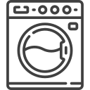
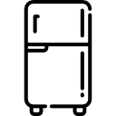

Barcelona, Badalona, Castelldefels, Cornellà de Llobregat, Gavà, Granollers, Hospitalet de Llobregat, Pallejà
EL Masnou, Mataró, Molins de Rei, Mollet del Vallès, Montcada i Reixac, El Prat de Llobregat
Premià de Mar, Ripollet, Rubí, Sabadell, Sant Adrià de Besòs, Sant Andreu de la Barca, Sant Boi de Llobregat
Sant Cugat del Vallès, Sant Feliu de Llobregat, Sant Joan Despí, Vilassar de Mar, Santa Coloma de Gramenet,
Barberà del Vallès, Santa Perpètua de Mogoda, Sant Vicenç dels horts, Cerdanyola del Vallès, Terrassa
Atendemos en :
Una de las marcas de electrodomésticos más conocidas y que forma parte de los hogares, negocios y oficinas españolas es Balay. La cual cuenta, con todo el prestigio de la tecnología alemana al servicio de las personas, a nivel de equipos para el hogar. Por ello en Servicio Técnico Comercial te ofrecemos un Servicio Técnico Balay.
612 598 512Sí, reparamos y damos mantenimiento a los equipos y todos modelos de los electrodomésticos de la marca Balay, tanto antiguos como de nueva generación. Nuestros técnicos están capacitados para trabajar con los diferentes equipos de la marca, como ser, lavadoras, secadoras, frigoríficos y más. Si estas teniendo problemas con alguno de tus equipos Balay, solo tienes que llamarnos y te agendamos un visita con el técnico.
Sí es muy recomendable aunque no obligatorio. Un mantenimiento anual permite detectar fallos antes de que se conviertan en averías graves, mejora la eficiencia energética y cumple con la normativa vigente en muchas comunidades autónomas. Además, en algunos casos es requisito para mantener la garantía del fabricante.
Si tu equipo Balay aún se encuentra en garantía, debes contactar directamente con el distribuidor o instalador oficial que realizó la venta o instalación. La garantía legal mínima de 3 años para productos nuevos en España se aplica a los productos comprados a partir del 1 de enero de 2022. Servitecom no somos el servicio técnico oficial de Balay, por lo que no podemos gestionar reparaciones cubiertas por la garantía del fabricante.
Contamos con un equipo de técnicos totalmente capacitados y certificados, lo que garantiza un servicio de reparación de tus electrodomésticos Balay de manera profesional y con amplia experiencia. Nuestro servicio técnico Balay te ofrece siempre la mejor solución posible.

Reparación de lavadoras, secadoras, lavavajillas de la marca Balay, trabajamos con los repuestos originales de la marca Balay
Reparamos e instalamos tu horno o encimera Balay en un tiempo record y con garantía.

Confíe en nuestro equipo técnico para la reparación y mantenimiento de su nevera o congelador Balay.
LUNES - VIERNES 9:00 A 13:00 /15:30 A 18:00
SABADOS 9:00 A 15.00
Barcelona, Badalona, Castelldefels, Cornellà de Llobregat, Gavà, Granollers, Hospitalet de Llobregat, Martorell, EL Masnou, Mataró, Molins de Rei, Mollet del Vallès, Montcada i Reixac, El Prat de Llobregat, Premià de Mar, Ripollet, Rubí, Sabadell, Sant Adrià de Besòs, Sant Andreu de la Barca, Sant Boi de Llobregat, Sant Cugat del Vallès, Sant Feliu de Llobregat, Sant Joan Despí, Vilassar de Mar, Santa Coloma de Gramenet, Barberà del Vallès, Santa Perpètua de Mogoda, Sant Vicenç dels Horts, Cerdanyola del Vallès, Terrassa, Viladecans, Sitges
Este pagina utiliza solo las cookies necesarias para mejorar su experiencia de navegación en este sitio web.